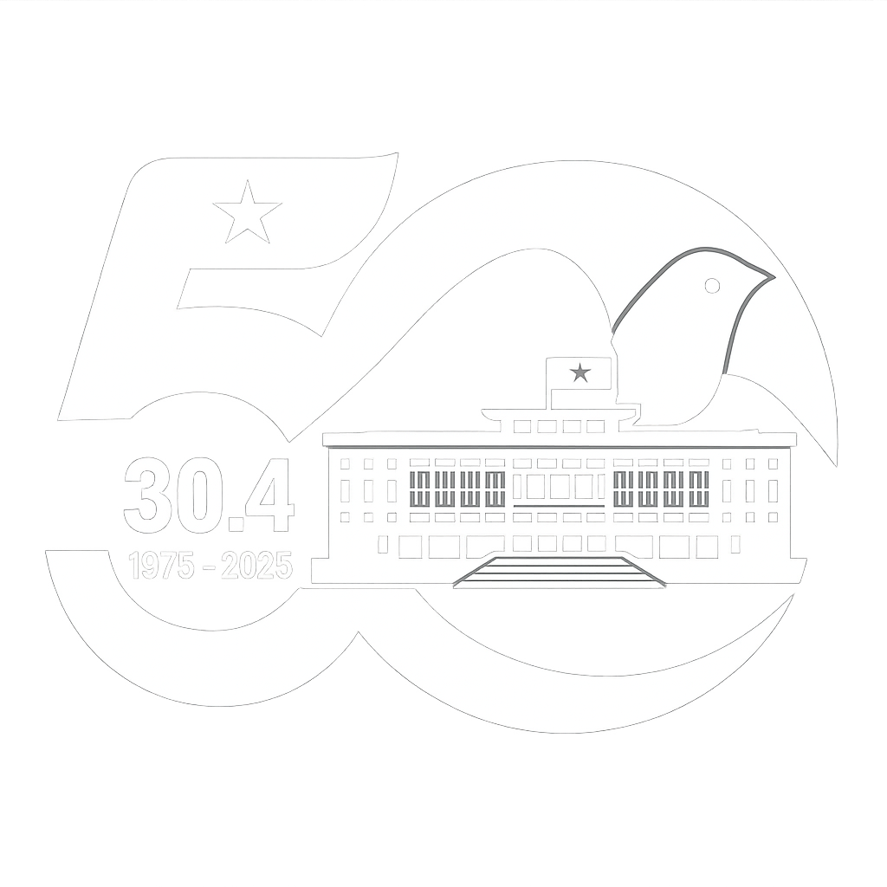

VN

30/04
19/05

Ngày 30/04 là ngày hoà mình vào không khí thống nhất đất nước mà cha ông ta đã hy sinh để có được như hôm nay. Cùng ghi lại "Dấu ấn kỷ niệm 50 năm thống nhất đất nước".
Đồng thời không thể quên vào ngày 19/05, ngày sinh thành của chủ tịch Hồ Chí Minh vĩ đại, người có công to lớn trong việc hình thành nước Cộng hoà xã hội chủ nghĩa Việt Nam cũng như thống nhất đất nước.


1. Bối cảnh lịch sử của cuộc kháng chiến chống thực dân Pháp (1945-1954)
Thế giới:
- - Sau Chiến tranh thế giới thứ hai, chủ nghĩa xã hội trở thành hệ thống.
- - Phong trào giải phóng dân tộc ở các nước thuộc địa, phụ thuộc và phong trào đấu tranh vì hoà bình, dân chủ ở các nước tư bản chủ nghĩa phát triển mạnh.
- - Quan hệ quốc tế diễn biến phức tạp và từng bước chịu sự chi phối của Chiến tranh lạnh.
Trong nước:
- - Sau Cách mạng tháng Tám năm 1945, Việt Nam bước vào kỉ nguyên độc lập, tự do. Nhân dân Việt Nam trở thành người làm chủ đất nước, gắn bó và quyết tâm bảo vệ chế độ mới.
- - Cách mạng Việt Nam cũng đứng trước những thử thách to lớn như: tình trạng ngoại xâm và nội phản; chính quyền và lực lượng vũ trang còn non trẻ; kinh tế nghèo nàn, lạc hậu, lại bị chiến tranh tàn phá; tàn dư của chế độ cũ còn nặng nề.
Nước Việt Nam Dân chủ Cộng hoà ở vào tình thế “ngàn cân treo sợi tóc”.
2. Diễn biến chính của cuộc kháng chiến chống thực dân Pháp (1945-1954)
a.Kháng chiến của nhân dân Nam Bộ chống thực dân Pháp trở lại xâm lược (1945)
Bối cảnh lịch sử:
- - Ngày 2-9-1945, khi nhân dân Sài Gòn - Chợ Lớn tổ chức mít tinh chào mừng ngày Độc lập, quân Pháp đã xả súng vào người dân.
- - Đêm 22 rạng sáng ngày 23-9-1945, quân Pháp đánh úp trụ sở Uỷ ban nhân dân Nam Bộ và cơ quan tự vệ thành phố Sài Gòn, mở đầu cuộc chiến tranh xâm lược Việt Nam lần thứ hai.
Diễn biến chính:
- - Quân dân Sài Gòn - Chợ Lớn cùng quân dân Nam Bộ đã nhất tề đứng lên chiến đấu chống quân xâm lược bằng nhiều hình thức.
- - Hàng vạn thanh niên gia nhập quân đội, xung phong vào đội quân “Nam tiến”, cùng nhân dân Nam Bộ và Nam Trung Bộ kháng chiến.
Ý nghĩa:
- - Giáng đòn đầu tiên vào kế hoạch “đánh nhanh, thắng nhanh” của Pháp.
- - Đẩy quân Pháp vào thế bị động và giam chân tại đây trong nhiều tháng.
- - Tạo điều kiện để cả nước chuẩn bị lực lượng cho cuộc kháng chiến lâu dài.
b.Những năm đầu của cuộc kháng chiến toàn quốc chống thực dân Pháp (1946-1950)
Cuộc kháng chiến toàn quốc bùng nổ:
- - Từ tháng 11-1946, Pháp khiêu khích, tấn công tại Hải Phòng, Lạng Sơn, Đà Nẵng, Hà Nội...
- - Ngày 18-12-1946, Pháp gửi tối hậu thư đòi giải tán lực lượng tự vệ.
- - Ngày 18 và 19-12-1946, Trung ương Đảng họp ở Vạn Phúc, quyết định phát động kháng chiến toàn quốc.
Thắng lợi quân sự tiêu biểu (1946-1950):
Cuộc chiến đấu ở các đô thị phía Bắc vĩ tuyến 16:
- - Diễn biến: từ 19-12-1946 đến 17-2-1947 tại Nam Định, Vinh, Hà Nội...
- - Kết quả: giam chân quân Pháp; quân ta rút lui an toàn.
- - Ý nghĩa: phá kế hoạch “đánh nhanh, thắng nhanh”; củng cố lực lượng.
Chiến dịch Việt Bắc (Thu - Đông 1947):
- - Diễn biến: Pháp tấn công Việt Bắc, ta bao vây, đẩy lùi.
- - Kết quả: Pháp rút lui; bảo vệ cơ quan đầu não kháng chiến.
- - Ý nghĩa: phá chiến lược “đánh nhanh, thắng nhanh”; mở ra giai đoạn mới.
Chiến dịch Biên giới (Thu - Đông 1950):
- - Diễn biến: từ tháng 9 đến 10-1950, quân ta tấn công Đông Khê, đánh Pháp trên Đường số 4.
- - Kết quả: giải phóng biên giới, mở đường liên lạc quốc tế, phá Kế hoạch Rơ-ve.
- - Ý nghĩa: chiến dịch tiến công lớn đầu tiên; giành thế chủ động.
c.Bước phát triển mới của cuộc kháng chiến (1951-1953)
Bối cảnh:
- - Cuối 1950, Pháp với viện trợ Mỹ thực hiện kế hoạch Đờ Lát đờ Tát-xi-nhi, xây dựng tuyến phòng thủ ở trung du và đồng bằng Bắc Bộ.
Trong bối cảnh mới, quân dân cả nước tiếp tục đẩy mạnh kháng chiến.
Thắng lợi tiêu biểu:
- Chính trị:
- - Tháng 2-1951: Đại hội Đảng toàn quốc lần thứ II tại Chiêm Hoá, đổi tên thành Đảng Lao động Việt Nam.
- - Tháng 3-1951: Mặt trận Việt Minh và Hội Liên hiệp quốc dân Việt Nam hợp nhất thành Mặt trận Liên Việt.
- - Liên minh nhân dân Việt - Miên - Lào được thành lập.
Quân sự:
- - Quân đội nhân dân Việt Nam chủ động mở nhiều chiến dịch tiến công và phản công để giữ vững quyền chủ động trên chiến trường chính Bắc Bộ:
- Các chiến dịch ở trung du đồng bằng Bắc Bộ (1950-1951)
- - Chiến dịch Hoà Bình (1951-1952)
- - Chiến dịch Tây Bắc (1952)
- - Chiến dịch Thượng Lào (1953)
Kinh tế:
- - Thủ công nghiệp và công nghiệp cơ bản đáp ứng nhu cầu tiêu dùng và một phần nhu cầu vũ khí, đạn dược, quân trang, quân dụng cho bộ đội.
- - Nông nghiệp có bước phát triển mới.
Văn hoá:
- - Tiếp tục triển khai thực hiện cuộc Cải cách giáo dục lần thứ nhất (từ năm 1950) theo phương châm: phục vụ kháng chiến, phục vụ dân sinh, phục vụ sản xuất.
- - Phong trào văn hoá, văn nghệ quần chúng phát triển rộng khắp.
d.Cuộc kháng chiến toàn quốc chống thực dân Pháp thắng lợi (1953-1954)
Hành động mới của Pháp - Mỹ:
- - Tháng 7-1953, được sự viện trợ của Mỹ, Pháp đề ra kế hoạch Na-va với hi vọng trong 18 tháng sẽ giành thắng lợi quân sự quyết định để “kết thúc chiến tranh trong danh dự”.
Cuộc tiến công chiến lược Đông - Xuân 1953-1954:
- - Tháng 9-1953, Bộ Chính trị Trung ương Đảng Lao động Việt Nam đề ra kế hoạch tác chiến đông - xuân 1953-1954.
- - Phương hướng chiến lược là tập trung lực lượng mở các cuộc tiến công vào những nơi quân Pháp yếu, buộc địch bị động phân tán lực lượng.
- - Bộ đội chủ lực mở các chiến dịch ở Lai Châu, Trung Lào, Thượng Lào, Bắc Tây Nguyên,... kết hợp với chiến tranh du kích ở hậu phương địch.
- Ý nghĩa: làm phá sản bước đầu kế hoạch Na-va.
Chiến dịch Điện Biên Phủ (1954):
- - Tháng 11-1953, Na-va điều quân chiếm giữ Điện Biên Phủ, xây dựng thành tập đoàn cứ điểm mạnh nhất Đông Dương.
- - Tháng 12-1953, Bộ Chính trị quyết định mở chiến dịch Điện Biên Phủ nhằm tiêu diệt lực lượng Pháp, giải phóng Tây Bắc và Bắc Lào.
- - Chiến dịch diễn ra qua 3 đợt, từ 13-3-1954 đến 7-5-1954. Chiều 7-5-1954, tướng Đờ Ca-xtơ-ri cùng toàn bộ tham mưu Pháp đầu hàng.
- Ý nghĩa:
- - Làm phá sản hoàn toàn kế hoạch Na-va.
- - Giáng đòn quyết định vào ý chí xâm lược của thực dân Pháp.
- - Xoay chuyển cục diện chiến tranh, tạo thuận lợi cho đấu tranh ngoại giao tại Hội nghị Giơ-ne-vơ.
1. Bối cảnh lịch sử của cuộc kháng chiến chống Mỹ, cứu nước
Thế giới:
+ Chiến tranh lạnh và cục diện đối đầu Đông - Tây tiếp tục diễn ra ngày càng căng thẳng. Quan hệ giữa các nước lớn có nhiều diễn biến phức tạp.
+ Phong trào giải phóng dân tộc, phong trào đấu tranh vì hoà bình, dân chủ phát triển mạnh.
+ Công cuộc xây dựng chủ nghĩa xã hội ở Liên Xô, Trung Quốc và các nước Đông Âu đạt được nhiều thành tựu quan trọng.
Trong nước: sau khi Hiệp định Giơ-ne-vơ được kí kết, Việt Nam tạm thời bị phân chia thành hai miền:
+ Miền Bắc được hoàn toàn giải phóng, tạo điều kiện cho việc thực hiện các nhiệm vụ cách mạng của cả nước;
+ Ở miền Nam, Mỹ thay thế Pháp dựng lên chính quyền Ngô Đình Diệm, phá hoại Hiệp định Giơ-ne-vơ, thực hiện chia cắt Việt Nam, biến miền Nam thành thuộc địa kiểu mới và căn cứ quân sự của Mỹ ở Đông Nam Á.
2. Các giai đoạn phát triển chính của cuộc kháng chiến chống Mỹ, cứu nước (1954-1975)
a. Giai đoạn 1954-1960
- Từ 1954-1957: Hoàn thành cải cách ruộng đất, khôi phục kinh tế, hàn gắn vết thương chiến tranh
+ Trong hơn 2 năm (1954 - 1956), miền Bắc tiếp tục tiến hành 6 đợt giảm tô, 4 đợt cải cách ruộng đất. Khẩu hiệu “người cày có ruộng" trở thành hiện thực.
+ Công cuộc khôi phục kinh tế, hàn gắn vết thương chiến tranh được triển khai rộng rãi ở nhiều ngành nghề, lĩnh vực (nông nghiệp, thương nghiệp, giao thông vận tải,..).
- Từ 1958-1960: Cải tạo quan hệ sản xuất, bước đầu phát triển kinh tế - xã hội
+ Việc cải tạo quan hệ sản xuất được thực hiện trên các lĩnh vực kinh tế, khâu chính là hợp tác hoá nông nghiệp.
+ Phát triển thành phần kinh tế quốc doanh là nhiệm vụ trọng tâm của công cuộc xây dựng và phát triển kinh tế - xã hội.
Ý nghĩa: Việc hoàn thành cải cách ruộng đất, thực hiện nhiệm vụ cải tạo quan hệ sản xuất, bước đầu phát triển kinh tế - xã hội đã:
+ Làm cho cơ cấu kinh tế - xã hội miền Bắc thay đổi, tạo cơ sở cho sự nghiệp xây dựng chủ nghĩa xã hội trong giai đoạn tiếp theo;
+ Xây dựng miền Bắc trở thành căn cứ địa cách mạng của cả nước, là hậu phương vững chắc của cuộc kháng chiến chống Mỹ, cứu nước.
Miền Nam
- Từ 1954-1958: Đấu tranh chính trị chống chế độ Mỹ - Diệm, giữ gìn và phát triển lực lượng cách mạng
+ Đấu tranh chính trị đòi Mỹ - Diệm thi hành Hiệp định Giơ-ne-vơ, đòi quyền tự do, dân chủ; chống khủng bố, đàn áp.
+ Từ năm 1957, phong trào bước đầu chuyển sang kết hợp đấu tranh chính trị với đấu tranh vũ trang.
- Từ 1959-1960: Phong trào Đồng khởi
+ Nghị quyết 15 của Đảng Lao động Việt Nam quyết định sử dụng bạo lực cách mạng để đánh đổ chính quyền Mỹ - Diệm.
+ Ban đầu nổ ra lẻ tẻ ở Vĩnh Thạnh (Bình Định), Bác Ái (Ninh Thuận), Trà Bồng (Quảng Ngãi), sau đó lan nhanh thành phong trào trên khắp Nam Bộ, Nam Trung Bộ, Tây Nguyên, Trung Trung Bộ, tiêu biểu là ở tỉnh Bến Tre.
+ Ý nghĩa của phong trào Đồng khởi:
▪ Giáng đòn nặng nề vào chính sách thực dân mới của Mỹ;
▪ Làm lung lay chính quyền Ngô Đình Diệm;
▪ Đưa cách mạng miền Nam từ thế giữ gìn lực lượng sang thế tiến công.
▪ Từ khí thế của phong trào Đồng khởi, Mặt trận Dân tộc giải phóng miền Nam Việt Nam ra đời (20-12-1960).
b. Giai đoạn 1961 - 1965
♦ Miền Bắc thực hiện kế hoạch Nhà nước 5 năm lần thứ nhất
- Miền Bắc thực hiện kế hoạch Nhà nước 5 năm lần thứ nhất (1961 - 1965) nhằm bước đầu xây dựng cơ sở vật chất - kĩ thuật của chủ nghĩa xã hội, với trọng tâm là phát triển công nghiệp, nông nghiệp, tiếp tục cải tạo xã hội chủ nghĩa, tăng cường thành phần kinh tế quốc doanh, cải thiện đời sống nhân dân, củng cố quốc phòng, an ninh.
Kết quả:
+ Sức mạnh của hậu phương miền Bắc được tăng cường.
+ Hoạt động chi viện cho tiền tuyến miền Nam được đẩy mạnh.
Miền Nam chiến đấu chống chiến lược “Chiến tranh đặc biệt” của Mỹ
- Hành động của Mỹ và chính quyền Sài Gòn:
+ Từ năm 1961, Mỹ chuyển sang thực hiện chiến lược “Chiến tranh đặc biệt”.
+ “Chiến tranh đặc biệt” là loại hình chiến tranh xâm lược thực dân mới được tiến hành bằng quân đội Sài Gòn, dưới sự chỉ huy của hệ thống cố vấn Mỹ, dựa vào trang bị vũ khí và phương tiện kĩ thuật của Mỹ.
+ Để thực hiện kế hoạch, Mỹ và quân đội Sài Gòn tiến hành dồn dân lập “ấp chiến lược”, sử dụng các chiến thuật “trực thăng vận” và “thiết xa vận”; mở các cuộc hành quân càn quét lực lượng cách mạng.
- Chủ trương đấu tranh của Đảng Lao động Việt Nam:
+ Chiến đấu chống Mỹ và chính quyền Sài Gòn trên cả ba vùng chiến lược (rừng núi, đồng bằng và đô thị);
+ Đánh dịch bằng ba mũi giáp công (chính trị, quân sự, binh vận)
- Những thắng lợi quan trọng:
+ Đấu tranh quân sự
▪ Chiến thắng Ấp Bắc (1963) mở ra khả năng đánh bại chiến lược “Chiến tranh đặc biệt".
▪ Các chiến thắng Bình Giã (1964), An Lão (1964), Ba Gia, Đồng Xoài (1965)... từng bước làm phá sản chiến lược “Chiến tranh đặc biệt" của Mỹ.
+ Đấu tranh chính trị
▪ Phong trào đấu tranh của các tầng lớp nhân dân ở các đô thị lớn như Sài Gòn, Huế, Đà Nẵng phát triển mạnh.
▪ Các cuộc đấu tranh của học sinh, sinh viên, tín đồ Phật giáo, “Đội quân tóc dài",... đã góp phần đưa đến sự sụp đổ của chính quyền Ngô Đình Diệm.
+ Phong trào phá “Ấp chiến lược”
▪ Phong trào phá “Ấp chiến lược" ở nông thôn diễn ra mạnh mẽ.
▪ Đến giữa năm 1965, “Ấp chiến lược" xương sống của chiến lược “Chiến tranh đặc biệt" bị phá sản về cơ bản.
c. Giai đoạn 1965 - 1968
Miền Nam chiến đấu chống chiến lược “Chiến tranh cục bộ” của Mỹ
- Hành động của Mỹ và chính quyền Sài Gòn:
+ Từ giữa năm 1965, Mỹ chuyển sang thực hiện chiến lược “Chiến tranh cục bộ”.
+ “Chiến tranh cục bộ” là loại hình chiến tranh được tiến hành chủ yếu bằng quân đội Mỹ, kết hợp với quân đồng minh của Mỹ và quân đội Sài Gòn.
+ Quân đội Mỹ mở hàng loạt các cuộc hành quân “tìm diệt” và “bình định” ở miền Nam, đồng thời tiến hành chiến tranh phá hoại miền Bắc lần thứ nhất
- Những thắng lợi quan trọng của quân dân miền nam:
+ Mặt trận quân sự:
▪ Giành thắng lợi mở đầu ở Núi Thành (1965), Vạn Tường (1965).
▪ Chiến thắng trong hai mùa khô: 1965 - 1966 và 1966 - 1967.
▪ Cuộc Tổng tiến công và nổi dậy Xuân 1968 đã làm phá sản chiến lược "Chiến tranh cục bộ", buộc Mỹ phải tuyên bố chấm dứt không điều kiện chiến tranh phá hoại miền Bắc.
+ Mặt trận chính trị:
▪ Ở thành thị, phong trào đấu tranh của công nhân, học sinh, sinh viên,... đòi Mỹ rút quán về nước, đòi tự do, dân chủ tiếp tục diễn ra mạnh mẽ.
▪ Vị thế và uy tín của Mặt trận Dân tộc giải phóng miền Nam Việt Nam được nâng cao.
+ Mặt trận ngoại giao:
▪ Đấu tranh ngoại giao được nâng lên thành một mặt trận từ đầu năm 1967.
▪ Đàm phán chính thức giữa đại diện Chính phủ Việt Nam Dân chủ Cộng hoà và đại diện Chính phủ Mỹ diễn ra tại Pa-ri (1968).
Miền Bắc vừa chiến đấu chống chiến tranh phá hoại lần thứ nhất của Mỹ, vừa sản xuất và thực hiện nghĩa vụ hậu phương
- Chiến đấu chống chiến tranh phá hoại lần thứ nhất:
+ Ngày 5-8-1964, sau khi dựng lên “sự kiện Vịnh Bắc Bộ”, Mỹ cho không quân đánh phá một số địa điểm ở miền Bắc. Từ năm 1965, Mỹ chính thức mở rộng chiến tranh ra miền Bắc lần thứ nhất, nhằm phá hoại tiềm lực kinh tế, quốc phòng và công cuộc xây dựng chủ nghĩa xã hội; ngăn chặn nguồn chi viện từ miền Bắc vào miền Nam; uy hiếp tinh thần, làm lung lay ý chí chiến đấu của nhân dân Việt Nam.
+ Trong hơn 4 năm chống chiến tranh phá hoại của Mỹ, quân và dân miền Bắc đã bắn rơi và phá huỷ 3 243 máy bay, bắn chìm 143 tàu chiến của địch. Cuối năm 1968, Mỹ tuyên bố ngừng ném bom miền Bắc.
- Miền Bắc tiếp tục thực hiện tốt vai trò của hậu phương lớn, duy trì hoạt động sản xuất và chi viện cho tiền tuyến lớn miền Nam với tinh thần “Thóc không thiếu một cân, quân không thiếu một người”.
d. Giai đoạn 1969 - 1973
Miền Nam chiến đấu chống chiến lược “Việt Nam hoá chiến tranh” của Mỹ
- Hành động của Mỹ và chính quyền Sài Gòn:
+ Từ năm 1969, Mỹ chuyển sang thực hiện chiến lược “Việt Nam hoá chiến tranh” và mở rộng chiến tranh sang Lào, Cam-pu-chia.
+ “Việt Nam hoá chiến tranh” là loại hình chiến tranh được tiến hành chủ yếu bằng lực lượng quân đội Sài Gòn, có sự phối hợp về hoả lực, không quân, hải quân, hậu cần Mỹ và do cố vấn Mỹ chỉ huy.
+ Thủ đoạn:
▪ Mỹ từng bước rút quân về nước nhưng vẫn tiếp tục viện trợ quân sự cho chính quyền Sài Gòn, đồng thời hỗ trợ quân đội Sài Gòn mở các cuộc hành quân sang Cam-pu-chia (1970), tăng cường chiến tranh ở Lào (1971).
▪ Mỹ cũng thực hiện các chính sách ngoại giao để hạn chế sự giúp đỡ của Trung Quốc, Liên Xô đối với cuộc kháng chiến của nhân dân Việt Nam;
▪ Gây chiến tranh phá hoại miền Bắc lần thứ hai.
- Thắng lợi tiêu biểu của quân dân miền Nam:
+ Mặt trận quân sự:
▪ Đánh bại cuộc hành quân xâm lược Campuchia (1970).
▪ Đánh bại cuộc hành quân Lam Sơn 719 ở Đường 9-Nam Lào (1971).
▪ Chiến dịch Cánh đồng Chum-Xiêng Khoảng thắng lợi (1972)
▪ Cuộc Tiến công chiến lược năm 1972 đã chọc thủng 3 phòng tuyến mạnh nhất của quân đội Sài Gòn ở Quảng Trị, Tây Nguyên, Đông Nam Bộ, buộc Mỹ phải tuyên bố “Mỹ hoá" trở lại chiến tranh (tức thừa nhận sự thất bại của chiến lược "Việt Nam hoá chiến tranh").
+ Mặt trận chính trị:
▪ Chính phủ Cách mạng Lâm thời Cộng hoà Miền Nam Việt Nam ra đời (tháng 6-1969).
▪ Hội nghị cấp cao ba nước Đông Dương họp, biểu thị quyết tâm đoàn kết chiến đấu chống Mỹ (tháng 4-1970).
+ Mặt trận ngoại giao:
▪ Đàm phán bốn bên chính thức diễn ra tai Pa-ri (25-1- 1969).
▪ Hiệp định Pa-ri về chấm dứt chiến tranh, lập lại hoà bình ở Việt Nam được kí kết (ngày 27-1-1973).
Miền Bắc khôi phục và phát triển kinh tế - xã hội, chống chiến tranh phá hoại lần thứ hai của Mỹ và thực hiện nghĩa vụ hậu phương
- Chiến đấu chống chiến tranh phá hoại miền Bắc lần thứ hai:
+ Trước nguy cơ chiến lược “Việt Nam hoá chiến tranh” bị phá sản, từ tháng 4-1972 đến tháng 12-1972, Mỹ tiếp tục gây chiến tranh bằng không quân và hải quân phá hoại miền Bắc lần thứ hai.
+ Từ ngày 18 đến ngày 29-12-1972, Mỹ tiến hành cuộc tập kích chiến lược đường không bằng máy bay B-52 vào Hà Nội, Hải Phòng và một số thành phố ở miền Bắc, nhằm giành thắng lợi quân sự quyết định, buộc Việt Nam phải kí hiệp định có lợi cho Mỹ.
+ Qua 12 ngày đêm chiến đấu, quân dân miền Bắc đã bắn rơi 81 máy bay, trong đó có 34 máy bay B-52. Thắng lợi này được coi như trận “Điện Biên Phủ trên không”, buộc Mỹ phải tuyên bố ngừng hẳn các hoạt động chống phá miền Bắc và kí Hiệp định Pa-ri (1973) về chấm dứt chiến tranh, lập lại hoà bình ở Việt Nam.
- Làm nghĩa vụ hậu phương: Trong những năm 1969 - 1972, miền Bắc tiếp tục chi viện sức người, sức của cho tiền tuyến miền Nam và chiến trường Lào, Cam-pu-chia.
e. Giai đoạn 1973 - 1975
Miền Bắc khôi phục và phát triển kinh tế - xã hội, tiếp tục thực hiện nghĩa vụ hậu phương
- Khôi phục và phát triển kinh tế - xã hội:
+ Đến năm 1974, về cơ bản miền Bắc đã khôi phục các cơ sở kinh tế, hệ thống thuỷ nông, mạng lưới giao thông, các công trình văn hoá, giáo dục, y tế.
+ Cuối năm 1974, sản xuất nông nghiệp, công nghiệp trên một số ngành, lĩnh vực đã đạt và vượt mức năm 1964 và năm 1971. Đời sống nhân dân ổn định.
- Chi viện cho miền Nam, Lào, Cam-pu-chia:
+ Trong hai năm 1973 - 1974, miền Bắc đã đưa vào chiến trường miền Nam, Lào, Cam-pu-chia gần 20 vạn bộ đội. Đầu năm 1975 tăng thêm vào 57 000 bộ đội.
+ Miền Bắc tăng cường chi viện vật chất - kĩ thuật, bảo đảm đầy đủ nhu cầu cấp bách cho chiến trường miền Nam.
Miền Nam đấu tranh chống “bình định - lấn chiếm”, tạo thế và lực tiến tới giải phóng hoàn toàn
- Chiến đấu chống “bình định - lấn chiếm:
+ Từ tháng 3-1973, chính quyền Sài Gòn tiến hành chiến dịch “tràn ngập lãnh thổ”, mở các cuộc hành quân “bình định - lấn chiếm” vùng giải phóng.
+ Thực hiện Nghị quyết Hội nghị Trung ương lần thứ 21 của Đảng Lao động Việt Nam (tháng 7-1973), từ cuối năm 1973, quân dân miền Nam tiến hành các cuộc đấu tranh chống “bình định - lấn chiếm”, đồng thời chủ động mở một số cuộc tiến công để mở rộng vùng giải phóng.
+ Cuối năm 1974, đầu năm 1975, quân dân miền Nam mở đợt hoạt động quân sự ở vùng Đồng bằng sông Cửu Long và Đông Nam Bộ, giành thắng lợi quan trọng ở Đường 14 - Phước Long (6-1-1975).
- Giải phóng miền Nam:
+ Hoàn cảnh lịch sử:
▪ Chiến thắng Đường 14 - Phước Long thể hiện sự lớn mạnh và khả năng thắng lợi của Quân Giải phóng, đồng thời cho thấy sự suy yếu, bất lực của quân đội Sài Gòn và khả năng can thiệp trở lại của Mỹ là rất hạn chế.
▪ Bộ Chính trị Ban Chấp hành Trung ương Đảng đã bổ sung, hoàn chỉnh kế hoạch giải phóng miền Nam trong hai năm 1975 và 1976, đồng thời chỉ rõ: “Nếu thời cơ đến vào dầu hoặc cuối năm 1975 thì lập tức giải phóng miền Nam trong năm 1975”.
+ Diễn biến chính: cuộc Tổng tiến công và nổi dậy Xuân 1975 diễn ra trong gần hai tháng, trải qua ba chiến dịch lớn.
▪ Chiến dịch Tây Nguyên (4-3 đến 24-3-1975):Quân Giải phóng giành thắng lợi trong trận then chốt Buôn Ma Thuột, khiến hệ thống phòng thủ của địch ở Tây Nguyên rung chuyển rồi sụp đổ. Chiến dịch Tây Nguyên thắng lợi đã chuyển cuộc kháng chiến chống Mỹ, cứu nước từ tiến công chiến lược sang tổng tiến công chiến lược trên toàn chiến trường miền Nam.
▪ Chiến dịch Huế - Đà Nẵng (21-3 đến 29-3-1975): Quân Giải phóng tấn công, giải phóng thành phố Huế, toàn tỉnh Thừa Thiên và Đà Nẵng, mở ra khả năng giải phóng hoàn toàn miền Nam ngay trong năm 1975.
▪ Chiến dịch Hồ Chí Minh (26-4 đến 30-4-1975): Quân Giải phóng tấn công, giải phóng Sài Gòn - Gia Định. Trưa ngày 30-4-1975, Dương Văn Minh tuyên bố đầu hàng không điều kiện, chiến dịch Hồ Chí Minh toàn thắng.
Kết quả: Đến ngày 2-5-1975, toàn bộ miền Nam cùng các đảo và quần đảo hoàn toàn được giải phóng.


Chiến dịch Hồ Chí Minh
Bộ Chính trị quyết định Chiến dịch giải phóng Sài Gòn - Gia Định mang tên Chiến dịch Hồ Chí Minh.
14/4/1975
Tiến công vào Sài Gòn
Chiều 26/4/1975, chủ lực của Quân giải phóng cùng lúc tiến công vào trung tâm Sài Gòn.
26/4/1975
Phá vỡ tuyến phòng thủ
26 đến 28/4/1975, quân ta đã phá vỡ tuyến phòng thủ vòng ngoài.
26 - 28/4/1975
Địch mất khả năng chỉ huy
Chiều 28/4/1975, các đơn vị ngụy không còn nhận được mệnh lệnh từ các chỉ huy do họ đã tháo chạy ra nước ngoài.
28/4/1975
Tổng tiến công
29/4/1975, quân ta mở cuộc tổng tiến công.
29/4/1975
Tiếp tục tấn công
Sáng 30/4/1975, địch xin ngừng bắn, nhưng bộ đội ta vẫn kiên quyết tấn công.
30/4/1975 (sáng)

Chiến thắng
11 giờ 30 phút ngày 30/4, quân ta đánh chiếm Dinh Độc Lập, cờ giải phóng tung bay. Chiến dịch Hồ Chí Minh toàn thắng.
30/4/1975 (11:30)

19-04-2025
Lễ kỷ niệm 50 năm giải phóng miền Nam, thống nhất đất nước

6h30 30-04-2025
Chương trình diễu binh, diễu hành tại một số tuyến đường trung tâm TP Hồ Chí Minh

Đêm 27 và 28-4
Triển lãm điện ảnh “Âm vang đại thắng mùa Xuân 1975” tại sân khấu Nguyễn Huệ

Tối 30-04-2025
Chương trình nghệ thuật đặc biệt “Ngày hội Thống nhất non sông”

8h00 29-04-2025
Tổ chức Lễ dâng hương, dâng hoa tưởng niệm các anh hùng liệt sĩ tại Nghĩa trang Liệt sĩ TP Hồ Chí Minh
Lịch trình 30/4
-
6h25-6h55 Văn nghệ (Đường Lê Duẩn)
-
7h Chào cờ, 21 phát đại bác
-
7h02-7h57 Khai mạc đại lễ
-
8h04-8h07 Cử nhạc "Đất nước trọn niềm vui"
-
8h07 Bắt đầu diễu binh, diễu hành
-
8h08 10 trực thăng treo cờ tổ quốc bay qua lễ đài, dọc bờ sông Sài Gòn
-
8h30 7 tiêm kích và 6 máy bay chiến đấu trình diễn, thả mồi nhiệt
-
9h30 Các khối diễu binh giao lưu với người dân, nhảy dân vũ...
-
19h-19h25
- Kỵ binh diễu hành Đ. Nguyễn Huệ
- 3D Mapping trước toà nhà UBND TP HCM
- Đội Quân nhạc, Đội kèn biểu diễn tại UBND TP HCM
-
21h Bắn pháo hoa tại 28 điểm
135 năm ngày sinh Bác Hồ
Tổ chức Lễ dâng hương, dâng hoa
Tổ chức Hội thảo khoa học cấp quốc gia
Tổ chức Chương trình nghệ thuật đặc biệt chào mừng kỷ niệm
Tổ chức Chương trình giao lưu điển hình tiên tiến trong học tập và làm theo tư tưởng, đạo đức, phong cách Hồ Chí Minh
Xây dựng phim tài liệu "Bác Hồ với đồng bào dân tộc"
Xây dựng phim hoạt hình tuyên truyền cho thiếu nhi
Tổ chức các hoạt động thông tin, tuyên truyền ở Trung ương và địa phương